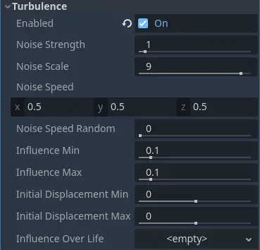
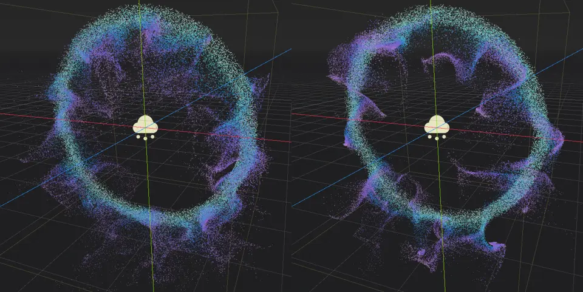
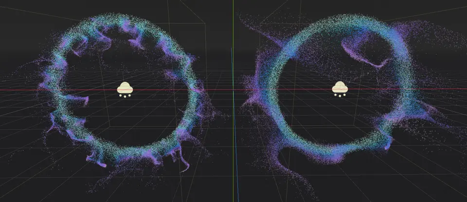
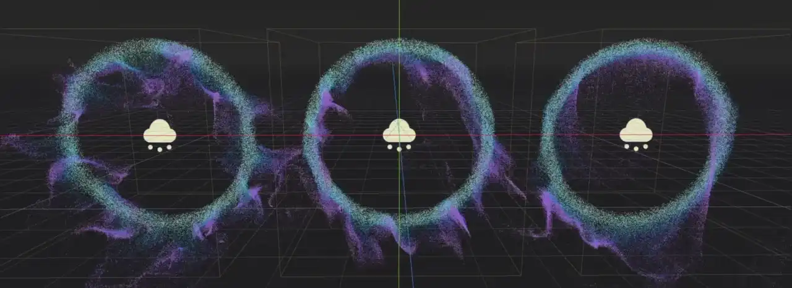
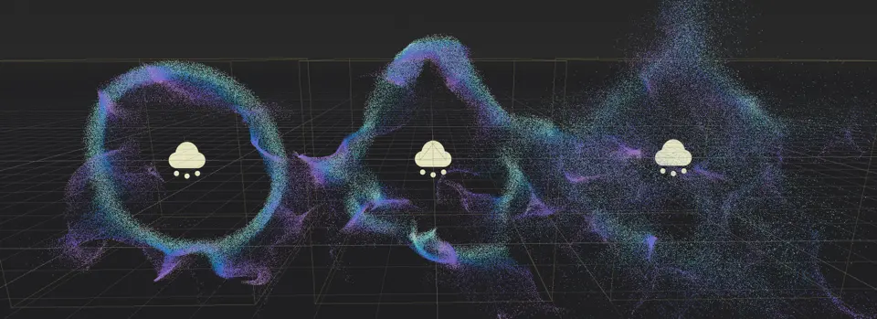

Nhiễu loạn hạt (turbulence)
Turbulence (nhiễu loạn) dùng một noise texture để thêm sự biến thiên và các họa tiết thú vị cho chuyển động của hạt. Nó có thể được kết hợp với các node particle attractor và va chạm để tạo ra hành vi trông phức tạp hơn nữa.

Các thuộc tính turbulence của hạt
Có hai việc bạn phải làm trước khi turbulence có tác dụng lên hệ thống hạt. Thứ nhất, bạn phải thêm chuyển động cho hệ thống hạt. Turbulence thay đổi hướng và tốc độ chuyển động của hạt, nhưng không tự tạo ra chuyển động. Chỉ cần cho hệ thống hạt một chút trọng lực là đủ, nhưng bạn cũng có thể tạo một số attractor nếu muốn hạt đi theo đường chuyển động phức tạp hơn. Thứ hai, bạn cần bật turbulence trong particle process material. Sau khi bật, bạn có thể truy cập mọi thuộc tính turbulence.
Cảnh báo
Turbulence dùng noise 3D, vốn tốn nhiều hiệu năng trên GPU. Chỉ bật turbulence cho tối đa vài hệ thống hạt trên màn hình. Không nên dùng turbulence khi nhắm tới nền tảng di động/web.
Các thuộc tính noise
Nền tảng của turbulence cho hạt là một họa tiết noise. Có một số thuộc tính cho phép bạn điều chỉnh các đặc tính khác nhau của họa tiết này.
Thuộc tính Noise Strength điều khiển độ tương phản của họa tiết, ảnh hưởng đến độ sắc nét tổng thể của turbulence. Giá trị thấp hơn tạo họa tiết mềm hơn, trong đó các đường chuyển động riêng lẻ không tách biệt rõ rệt với nhau. Đặt giá trị cao hơn để họa tiết rõ ràng hơn.

Ở giá trị 1 (trái), độ mạnh noise tạo ra họa tiết turbulence mềm hơn so với ở 20 (phải)
Thuộc tính Noise Scale điều khiển tần số của họa tiết. Về cơ bản nó thay đổi tỷ lệ UV của noise texture, trong đó giá trị nhỏ hơn cho chi tiết mịn hơn nhưng các họa tiết lặp lại sẽ sớm bị nhận ra hơn. Giá trị lớn hơn cho họa tiết turbulence tổng thể yếu hơn, nhưng hệ thống hạt có thể bao phủ một vùng rộng hơn trước khi sự lặp lại bắt đầu trở thành vấn đề.

Tỷ lệ noise của turbulence cho chi tiết mịn hơn ở giá trị 1.5 (trái) so với ở 6 (phải)
Thuộc tính Noise Speed nhận một vector và điều khiển tốc độ cùng hướng trượt (panning) của noise. Điều này cho phép bạn di chuyển họa tiết noise theo thời gian, thêm một lớp biến thiên chuyển động nữa cho hệ thống hạt.
Cảnh báo
Đừng nhầm lẫn tốc độ chuyển động của hạt với tốc độ trượt của noise! Chúng là hai thứ khác nhau. Chuyển động của hạt được xác định bởi một số thuộc tính, bao gồm cả noise của turbulence. Thuộc tính Noise Speed di chuyển chính họa tiết, từ đó thay đổi vị trí mà noise tác động lên hạt.
Ở giá trị (X=0,Y=0,Z=0), họa tiết noise hoàn toàn không di chuyển. Ảnh hưởng lên chuyển động của hạt giữ nguyên tại mọi điểm. Thay vào đó, đặt tốc độ thành (X=1,Y=0,Z=0) và họa tiết noise sẽ di chuyển dọc theo trục X.

Các giá trị tốc độ noise khác nhau. Trái: (X=0,Y=0,Z=0), giữa: (X=0.5,Y=0.5,Z=0.5), phải: (X=0,Y=-2,Z=0).
Thuộc tính Noise Speed Random thêm một chút ngẫu nhiên cho tốc độ trượt của noise. Điều này giúp phá vỡ các họa tiết dễ thấy, đặc biệt ở tốc độ trượt cao khi sự lặp lại sớm bị nhận ra hơn.
Các thuộc tính ảnh hưởng (influence)
Các thuộc tính influence xác định mức độ mỗi hạt bị turbulence tác động. Dùng Influence Min để đặt giá trị tối thiểu và Influence Max để đặt giá trị tối đa. Khi một hạt được sinh ra, mức ảnh hưởng được chọn ngẫu nhiên trong khoảng này. Bạn cũng có thể thiết lập một đường cong với thuộc tính Influence Over Life để thay đổi giá trị đó theo thời gian sống của mỗi hạt. Ba thuộc tính này cùng nhau điều khiển độ mạnh tác động của turbulence lên hệ thống hạt như đã mô tả trước đó.
Vì các thuộc tính này ảnh hưởng đến mức tác động tổng thể của turbulence lên hệ thống hạt, cả hướng lẫn tốc độ chuyển động đều thay đổi khi bạn đặt các giá trị khác nhau. Ảnh hưởng mạnh hơn khiến hạt di chuyển nhanh hơn, và kết quả là mọi hạt đi theo những đường hẹp hơn.

Hãy để ý cách các đường đi của hạt hẹp hơn và ít tản ra hơn ở giá trị ảnh hưởng cao (phải)
Các thuộc tính dịch chuyển (displacement)
Displacement (độ dịch chuyển) thay đổi vị trí bắt đầu của hạt. Dùng Initial Displacement Min để đặt giới hạn dưới và Initial Displacement Max để đặt giới hạn trên. Khi một hạt được sinh ra, mức dịch chuyển được chọn ngẫu nhiên trong khoảng này và nhân với một hướng ngẫu nhiên.
Displacement rất hữu ích để phá vỡ các hình dạng đều đặn hoặc để tạo hình dạng phức tạp từ những hình đơn giản hơn. Khác biệt duy nhất giữa các hệ thống hạt trong ảnh chụp màn hình bên dưới là giá trị được đặt cho các thuộc tính displacement.

Không displacement (trái), giá trị displacement 5 (giữa), khoảng displacement [-20, 20] (phải)